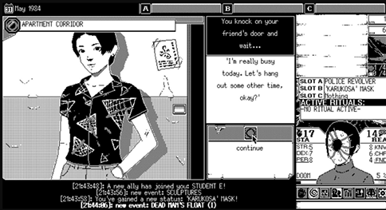

'World of Horror' is what happens when you mix Junji Ito with HP Lovecraft.
The scariest thing about World of Horror might be the fact that it's being lovingly crafted by a part-time dentist. Pawel Kozminski is the sole creator of World of Horror, and he also practices dentistry in Poland, splitting his time between poking at people's molars and placing pixels in the perfect spots using MS Paint. Yes, that Paint.
World of Horror is borne of strange circumstances, which might explain why the game itself is so unsettling. It plays out in five short stories set in a seaside village in 1980s Japan, whose residents are falling into mass madness while eldritch monsters rise from the seas. Eerie chiptune music plays throughout the game, frantic and propelling. People have gone missing, festering demons are walking the streets, and sushi chefs are serving omakase with human eyeballs on the platter. Fight scenes are turn-based, forcing you to stare down your fears and face slaughter one move at a time.
Apple never showed intentions of racing the Nexus 7 to the bottom in the tablet game, and the iPhone 5c is proof that it won't do that in the phone arena, either.
Infographic by Troy Dunham for Engadget